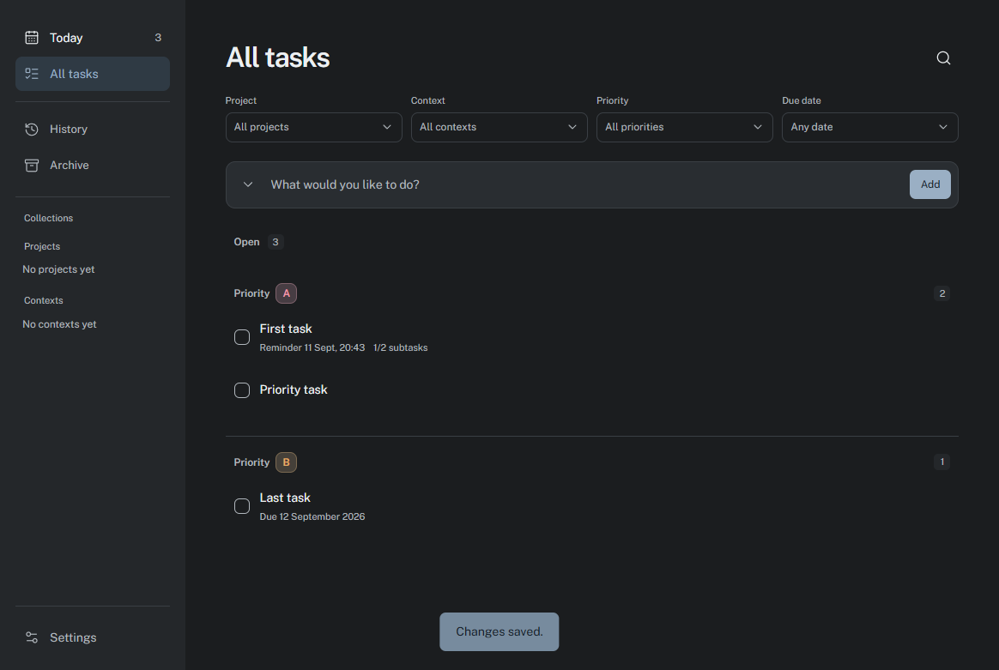
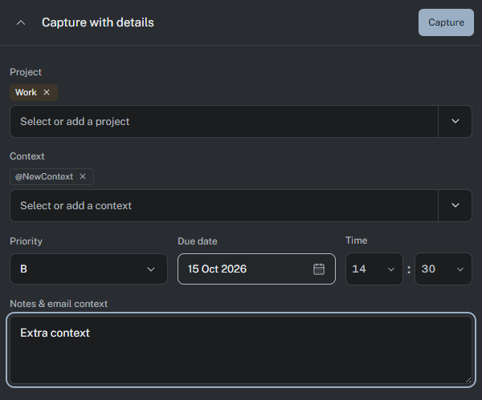
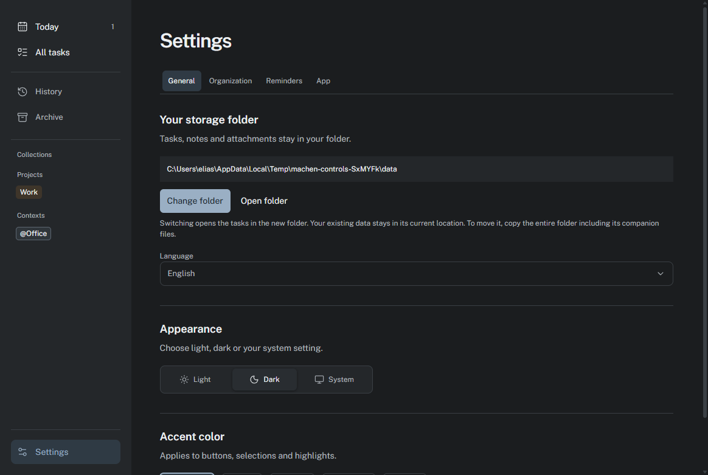

Keep the work clear. Keep the files yours.
Machen is a focused task app for Windows and macOS. Your tasks stay local in plain todo.txt files, readable without the app and ready to move when you are.
- Storage
- Local files, on your machine
- Format
todo.txt- Platforms
- Windows and macOS
The task list stays the center of gravity.

Today, first. Priorities, due dates, projects and contexts remain visible without getting in the way.

Capture quickly. Add a task without interrupting what you are doing.

Adapt the app. Choose your appearance, reminders and shortcuts.
Everything you need to keep tasks moving.
- Your files stay localTasks live in todo.txt files you can read and back up yourself.
- Plan the dayUse dates, due dates, projects, contexts, and priority groups from A to Z.
- Capture without switching contextQuick Capture and the command palette keep common actions close.
- Keep details inside the taskAdd notes, attachments, due times, and subtasks when they are useful.
- Remember what is dueGet gentle reminders and postpone them for ten minutes, an hour, or tomorrow.
- Stay available in the backgroundUse the tray and a freely movable pinned-task panel when the main window is closed.
Download Machen for your computer.
The button downloads the installer for this computer directly from GitHub.
A few useful answers.
Where are my tasks stored?
Machen stores tasks in local todo.txt files. You choose the folder and can open or back up the files at any time.
Do I need an account?
No. Machen does not require an account, cloud sync or a subscription to manage your local tasks.
Which systems are supported?
Current releases are provided for Windows and macOS. Find the exact installers on the GitHub releases page.
Can I use my existing todo.txt files?
Yes. Projects, contexts, priorities and due dates use familiar todo.txt conventions, so existing files remain useful.